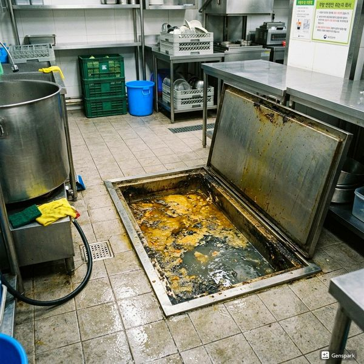

제우스시설관리 | 2025년 4월

화장실 배수구는 머리카락, 비누 찌꺼기, 피부 각질 등이 복합적으로 쌓이면서 막힘과 악취를 유발합니다. 올바른 관리만으로도 대부분의 문제를 예방할 수 있습니다.
머리카락: 샤워 시 빠지는 머리카락이 배수구 안에서 뭉쳐 다른 이물질을 끌어모읍니다. 특히 긴 머리카락은 배관 벽면에 걸려 덩어리를 형성합니다.
비누 찌꺼기: 비누가 물에 녹으면서 생기는 비누 때(soap scum)가 배관 내벽에 코팅처럼 달라붙습니다. 이 위에 머리카락과 각질이 부착됩니다.
치약/화장품: 세면대로 흘러간 치약, 화장품의 점성 물질이 배관에 축적됩니다.
✅ 머리카락 제거: 배수구 커버를 들어 보이는 머리카락을 집게로 제거
✅ 뜨거운 물 흘리기: 60~70도 뜨거운 물을 2분간 흘려보내기
✅ 베이킹소다: 월 1회 베이킹소다 반 컵 + 식초 반 컵으로 세척
✅ 트랩 봉수 유지: 자주 사용하지 않는 배수구에 물 한 컵 부어주기
사용 후 배수구 마개를 닫아두면 냄새 유입을 줄일 수 있습니다. 또한, 환기를 잘 시켜 습기가 차지 않도록 하면 곰팡이와 악취를 동시에 예방할 수 있습니다.
이런 관리를 해도 막힘이나 냄새가 해결되지 않는다면, 배관 내부에 심각한 문제가 있을 수 있으므로 전문가 점검을 받으세요.